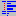

Indenting text is a common operation when dealing with source code editing, and Scintilla and Notepad++ have full support for it. Indentation is the addition of extra whitespace at the start of a line to separate blocks of text, adding a hierarchy.
Normally when editing, pressing the Tab key will insert a tab character at the current location. However, if some text is selected, pressing the Tab key (by default) will add additional whitespace at the beginning of each line that has any selected text, allowing to indent entire blocks of text at once. Pressing Shift-TAB will remove the indentation.
Indentation is done in levels, each level adding a predefined amount of whitespace (this amount can be configured, see Preferences). There is also an option of choosing whether to insert a TAB character or (multiple) spaces (for this, also see Preferences).
Scintilla can show a line/guide for each level, which can be toggled by selecting or pressing . This guideline shows a visual cue to keep track of the current indentation level of lines. To change the color used, see Styler Configurator (note that if the guideline matches highlighted braces, it will assume the color of the brace highlight).